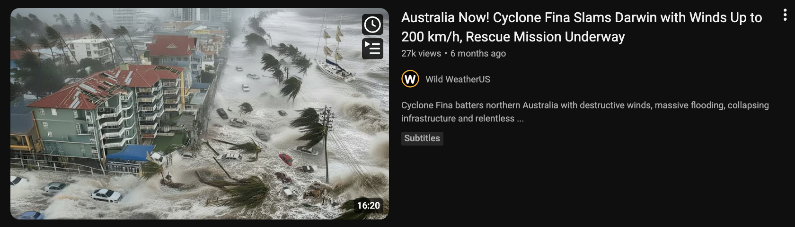

What a Deepfake Is
A "deepfake" is a piece of media (photo, video or audio) that has been generated or altered by AI to show something that did not actually happen. The name comes from "deep learning" (a kind of AI) plus "fake". Five years ago, making a convincing fake video took a Hollywood budget. Today, someone can do it on a phone for free.
Deepfakes are not all bad. The same technology is behind harmless fun like video filters, dubbing foreign films, and generating art. What has changed is that the cost has fallen to near zero, and so has the skill required.
You cannot avoid deepfakes. You just need to adjust the trust you give to images and videos, the way you already did for emails.
How They Are Made
You do not need the technical details. You do need to know what is possible, so you are not fooled when you see it.
AI-generated images come from tools like ChatGPT's image generator, Midjourney, or the image features inside Gemini. You type a description ("a photo of an older man sitting on a verandah holding a guitar") and the AI produces something that looks like a photograph. The result can be hard to tell from a real photo at a glance.
AI-generated video comes from tools like Sora, Runway and Google Veo. You type a short description and get a short clip. The results are good enough to fool many people on a quick scroll, though they often fall apart on close inspection.
AI voice cloning can copy someone's voice from as little as 3 to 10 seconds of audio. Facebook videos, voicemails, anything with your voice can be used as a sample. The cloned voice can then say whatever the scammer types.
Face swaps take a real video and replace one person's face with another. This is the classic "deepfake" people picture, though it is now only one of several techniques.
If you have recorded a voicemail greeting, posted a video, or left a clip with you talking in it, there is already enough to clone your voice. This is not cause for panic; it is cause for knowing about the "Hi Mum" scam (covered in Scams, Phishing and Dodgy Messages), now with Mum's voice on the phone, not just a text.
The same prompt, a different picture every time
Everyone in the room opens Microsoft Copilot and types the exact same prompt: "a hyper-realistic photo of a crocodile driving a Hilux". Compare the results around the room. No two are the same; everyone gets their own unique crocodile.
What that tells us: an image generator does not keep one "correct" picture and hand it back to you. It builds a fresh image every time, with an element of randomness baked in, so the same prompt can produce endless different results. That is worth remembering when you see an AI image online; it was invented on the spot, not photographed. It is also why an AI cannot "show you the real photo" of something; there is no real photo behind it.
AI Image Generation: Hands-On SimulationOpens in a new windowWhere You Will See Them
Deepfakes are already part of everyday life online. Here is where they show up, and why.
- Scam ads on Facebook and Instagram. Fake videos of celebrities or news anchors "endorsing" an investment scheme, a crypto platform, or a miracle product. The faces are real people. The voices are cloned. The endorsement is fake.
- Political misinformation. Fake videos of politicians saying things they never said, timed around elections or major events. These spread fastest on WhatsApp, Facebook and X.
- "Hi Mum" voice scams. The text-message version has evolved. The voice on the phone really does sound like your child, because it has been cloned from their social media.
- Romance scams. The photos have been fake for years. Now the video calls can be too, short clips generated so the scammer can "prove" they are who they claim to be.
- Fake Indigenous art and imitation styles. AI image tools can produce imitation "Aboriginal-style" artwork, trained on real artists' work without consent, and it is being sold online. There is reporting and analysis on this in the resource library.
- Harassment and image-based abuse. Someone's face put on content they never consented to, often sexual. This is illegal in Australia and reportable to eSafety.
- Harmless fun. Filters on Snapchat and TikTok. Movie dubbing. Memes. The same technology.
The tech is neutral. How it is used is what matters. Your job is to know when it is being used against you.
Spotting AI-Generated Images
AI-generated images have got good fast, but they still have tells. The best ones pass casual inspection. The medium ones, which is still most of them, fail these checks.
- Check the hands. Count the fingers. Look for weird bends, fused knuckles, or hands that do not match the wrist. Hands are still one of the hardest things for AI to get right.
- Check the text in the image. Shop signs, book titles, name tags. AI images often render text as plausible-looking gibberish. Zoom in and read it.
- Check the background. AI focuses on the main subject and loses quality behind it. Look for warped buildings, duplicated cars, blurry faces, windows that do not align.
- Check the skin and teeth. AI skin is often too smooth, even on older people. Teeth can look uncannily perfect, or the wrong count.
- Check jewellery, glasses and accessories. Earrings that do not match. Mismatched glasses frames. Necklaces that come out wrong on the other side.
- Check the source. Where did you see it? A verified news outlet, a person you follow, or a random account with no history? Source beats appearance.
- Reverse image search. Right-click an image in a browser and choose "Search image with Google", or upload it at images.google.com. You will see where else it has appeared, which often reveals it as AI-generated or as a real photo from a different context.
Spotting AI Video
Video deepfakes are harder to make than images, so they are not quite as common yet, and they fail in more obvious ways. But they are improving fast.
- Watch the mouth. Lip-sync is hard. Pause it or slow it down. Does the mouth shape match the sound? Often the lips are closed on a sound that should be open.
- Watch the eyes. Blinking can be off. Eyes may not track objects naturally, or look painted on.
- Watch the edges of the face. In face swaps, the jawline, ears and hairline are where the swap struggles; look for blur, a colour change, or hair that flickers between frames.
- Listen to the audio. AI voices often have a too-even rhythm. Real people pause, breathe, stumble, say "um". A voice with no imperfections, or wrong emphasis, is suspicious.
- Check the context. If a public figure has "said" something surprising, check a major news outlet first. Real news gets reported by multiple outlets within hours. Viral clips that never make the news are often fake.
Spotting AI Voice, Especially on a Phone Call
Voice cloning is the trickiest to spot in real time. When the "voice of a loved one" calls you in distress, your brain does not want to audit the audio.
- Ask a question only the real person would know. "What is the name of the first dog we had?" A cloned voice cannot improvise answers to personal memories.
- Listen for emotional flatness. Cloned voices often get the words right and the emotion slightly wrong: a crying voice that sounds calm, a panicked voice with no ragged breath.
- Call them back, on a number you have. If someone is calling from an unknown number claiming to be in trouble, hang up, then call them on the number you already have. If they do not answer, call someone who would know where they are.
- Agree a family code word in advance. Pick a word only your family knows. If anyone claims to be a family member in a phone emergency, they have to say it. This is the single most effective defence against voice cloning, and it takes five minutes at the dinner table.
It sounds silly until the day it matters. A family code word is the cheapest, simplest, strongest protection against every voice-cloning scam that exists. Pick it tonight.
Protecting Your Own Face, Voice and Name
You cannot make yourself un-cloneable. But you can reduce the raw material available to people who would misuse it.
- Set your Facebook and Instagram profiles so only friends can see your posts. Public profiles are the richest source of voice and face samples.
- Be mindful of the videos you post that include your voice. You do not have to stop posting; just know what is out there.
- Photos of children, especially in school uniforms or named locations, are worth thinking about twice.
- Agree the family code word (above). The single most important thing on this list.
- If you are in a public role (government, teaching, community leadership), consider keeping a separate work-facing profile and a private family-facing one.
If someone makes a deepfake of you. This is harassment or image-based abuse, and Australia has strong laws against it.
- Report it to the platform (Facebook, Instagram, TikTok) using their "report" function.
- Report it to the eSafety Commissioner. They can order platforms to take content down.
- If it is sexual or intimate, report it to police as well. It is a criminal offence in Australia.
Misinformation and What to Trust Online
Step back for a minute. Deepfakes are one tool in a much older problem: people sharing things online that are not true. Most of what spreads on social media is not deepfake; it is real images taken out of context, real videos from years ago reposted as today's news, or confident posts by people who got something wrong and never corrected it.
The question is not "is this image real?" The question is "is this image telling the truth?"
A three-step sanity check for anything that makes you angry, scared or triumphant within five seconds of seeing it:
- Slow down. The emotion is the hook, same as with scams. Notice the feeling. Do not share yet.
- Check another source. Is a real news outlet (ABC, Guardian, SBS, a major regional paper) reporting this? If the story is real and significant, yes. If only social media is carrying it, be cautious.
- Check the date. Old photos get recirculated constantly with new captions. Look for publication dates and reverse-image-search to check.
You do not have to do this for every meme. You do have to do it for anything before you share, because sharing is how misinformation spreads.
A real example: after a cyclone
When a cyclone affected the Top End, these two videos appeared in search results within hours, while people were still anxious and looking for information. Both use the real cyclone's name, dramatic imagery and alarming claims to pull in views.

"Tropical Cyclone Fina Hits Australia Today! Strong Winds, Heavy Rain and Damage in Darwin!" The footage shows flattened gum trees and tiled-roof houses that look more like a southern suburb than tropical Darwin.

"Cyclone Fina Slams Darwin with Winds Up to 200 km/h, Rescue Mission Underway." A flooded high-rise beachfront that does not match Darwin's foreshore, posted by a United States channel.
Neither is a careful news report. They are built for clicks, and they are a textbook example of what to be wary of after any disaster.
Sensational, fear-loaded titles ("Slams", "Up to 200 km/h", "Rescue Mission Underway") designed to make you click during an emergency. A channel that does not match the place: "Wild WeatherUS" reporting on Darwin; content farms repackage every disaster worldwide for views. Pictures that do not match the place: streetscapes and beachfronts that look nothing like Darwin, a sign of recycled footage or AI-generated images. Vague, round numbers and no named, credible source. And the timing: they appear fast, while real information is still coming out, exactly when people are anxious and likely to share.
For weather and emergencies in the Territory, go to the source: the Bureau of Meteorology (bom.gov.au), the NT Government's emergency and SecureNT pages, and ABC Emergency. Not a random YouTube channel or a social media post.
When you are a trusted person, what you share gets believed and passed on further. Sharing a fake or exaggerated image during an emergency can cause real worry, or send people the wrong way at the worst possible time. Sticking to official sources, and helping the people around you do the same, is part of keeping community safe.
Try It Yourself
Put your detection skills to the test
1. Generate an image. Open ChatGPT, Gemini or Copilot and ask: "Make me a realistic photo of an older Aussie woman at a community market in regional Australia." Look at the result. What is wrong with it? What would give it away if someone claimed it was real?
2. Reverse image search. Save that image, upload it to images.google.com, and see what comes back. Try the same with a real photo from your own phone, and compare.
Glossary
- Deepfake
- An image, video or audio clip made or altered by AI to show something that did not happen.
- Deep learning
- The kind of AI behind deepfakes; the "deep" in the name.
- Voice cloning
- Copying someone's voice from a short sample so a tool can make it "say" new things.
- Face swap
- Replacing one person's face with another's in a video.
- Reverse image search
- Uploading a picture to a search engine to find where else it has appeared online.
- Misinformation
- False or misleading information being spread, whether or not the person sharing it means harm.
- Image-based abuse
- Sharing, or threatening to share, intimate or doctored images of someone without consent. Illegal in Australia; report to eSafety.